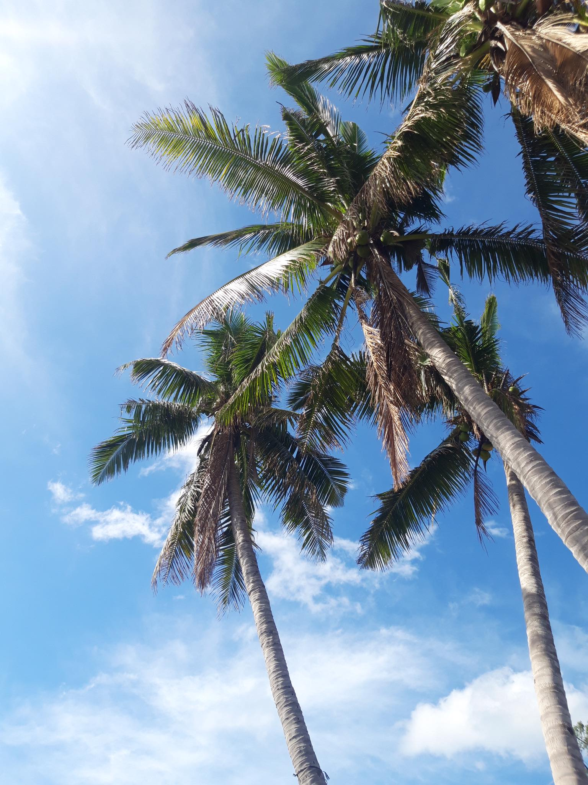
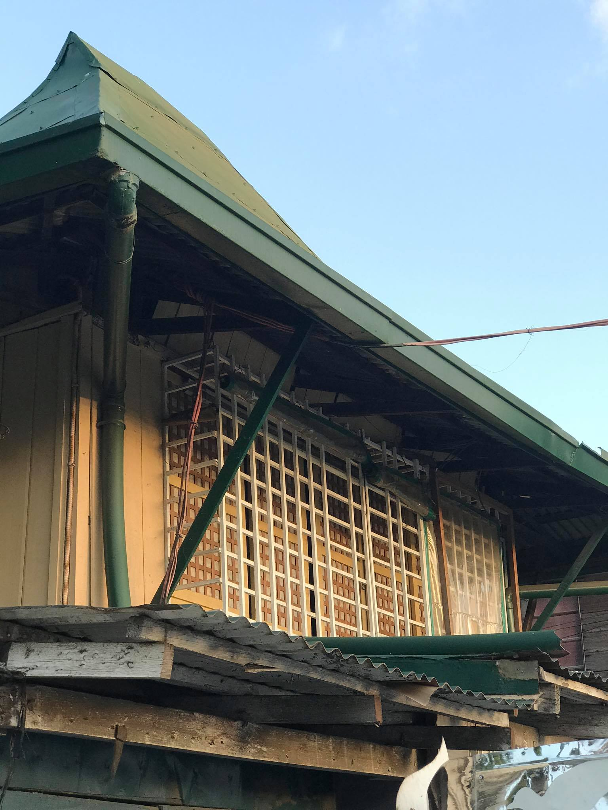

My photography skills is not good as others but still I took photos wherever I go despite this Pandemic because it makes me happy. I inspire other people by taking them also a photo even when it's not so good. I am still learning process-by-process even I am lack of equipments. I believe that the world could see my skills in photography and videography as well someday. And I would make my family as well as myself proud.
I took this photos in Batangas at 9:14 am, when we attended a wedding of our friends I just saw this spot and then I took a photoeven when we rush because we're a bit late.
I took this photo when we went to our grand father's funeral. I saw a lot of this kind of houses there and I was amazed because they preserved those old-houses and I can't believe that they still had those kind of beautiful houses. I just took a picture when we we're walking along the road and looking for some strret foods.
Also, I took a lot of nature photography in my home city. I took this photos at our subdivision I waited for the perfect time of taking photos and I guess that I did not failed myself. I really love nature photography and I took this photos in the afternoon.
I took this photos at Naic, Cavite when we we're having an outing. It is taken at 5:30 in the morning and I am lucky that I got this shots. I also love taking sunsets and sunrise pictures that's why it makes me happy even I only have my phone to take my best shots. I also do street photography and others as long as I can. I believe that I am good at taking photos but not so in editing the raw pictures I've taken.